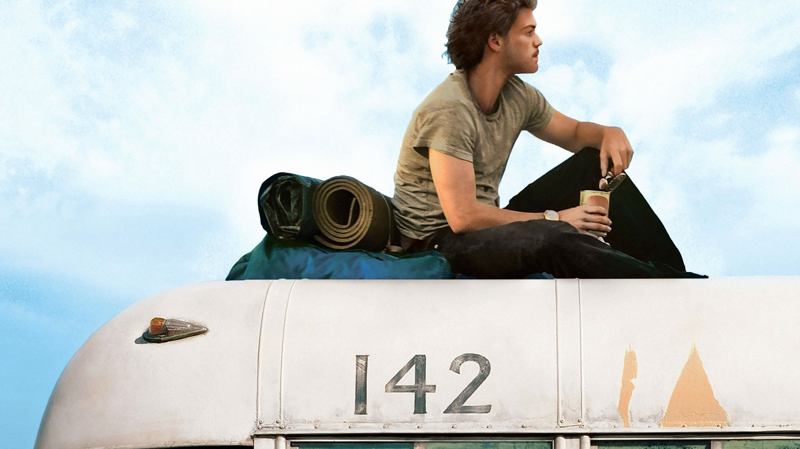

Hacia rutas salvajes es la historia real de Chris McCandless, un joven graduado de Emory que es encontrado muerto en el desierto de Alaska en septiembre de 1992, a los veinticuatro años. McCandless crece en los ricos suburbios de Virginia, DC, y es un atleta y académico muy talentoso que desde una edad temprana muestra una intensidad profunda, pasión y una estricta brújula moral. Después de graduarse de la escuela secundaria, McCandless pasa el verano solo en un viaje por carretera por todo el país, durante el cual descubre que su padre tuvo, en secreto, una segunda familia durante la infancia de Chris. McCandless regresa a casa y comienza su primer año en Emory, pero su enojo por aquella traición y por el hecho de que sus padres se lo hubieran ocultado empeora con el tiempo.
Cuando McCandless está en su último año en Emory, vive monásticamente, ha alejado a la mayoría de sus amigos con su intensidad y certidumbre moral, y apenas se mantiene en contacto con sus padres. Deja que ellos crean que a él le interesa la facultad de derecho, pero luego de graduarse con honores, dona sus ahorros de $25,000 de forma anónima a obras de caridad, se sube a su automóvil y se marcha sin decirle a nadie a dónde va, abandonando el uso de su verdadero nombre en el camino. Nunca más vuelve a ponerse en contacto con sus padres o con su hermana, Carine.
Poco después de dejar Atlanta, McCandless abandona su automóvil en el desierto luego de que una inundación empapara el motor y, a partir de ese momento, hace autostop en el noroeste, consigue trabajo aquí y allá pero no se queda en ninguna parte por mucho tiempo, a menudo vive en la calle y conserva la mínima cantidad posible de dinero y pertenencias. Durante este tiempo conoce a algunas pocas personas con cierta profundidad, y todos admiran su intensidad y su voluntad de vivir según sus creencias, pero también señalan que evita la verdadera intimidad.
Después de aproximadamente dos años de viajes itinerantes, McCandless establece un plan para ir a Alaska y vivir realmente en tierra salvaje, completamente solo y con muy pocos suministros, para ver si puede hacerlo, para empujarse a sí mismo hacia una situación límite. Se pasa unos meses preparándose, aprendiendo todo lo que puede sobre cacería, plantas comestibles, etc., y luego se va de Dakota del Sur, donde había estado trabajando, y hace autostop hacia Fairbanks. Todos los que escuchan el plan le advierten que necesita estar mejor preparado, o debería esperar hasta más adelante en la primavera, pero él es inflexible y obstinado.
En abril de 1992 a McCandless lo dejan cerca del Monte McKinley, y él camina hacia la tierra salvaje. Se pasa las siguientes dieciséis semanas cazando animales pequeños, alimentándose, leyendo y viviendo en un autobús desierto destinado a ser un refugio para cazadores, sin ver a ningún otro humano durante todo este tiempo. Tiene éxito en su mayor parte, aunque pierde peso significativamente. A fines de julio, sin embargo, McCandless probablemente come algunas semillas mohosas, y el moho contiene un veneno que esencialmente lo hace morir de hambre, sin importar cuánto come, y de todas maneras está demasiado débil para recolectar comida. McCandless se ve rápidamente incapacitado por el veneno. Al darse cuenta de que va a morir, escribe un mensaje de despedida, y unos cazadores encuentran el cuerpo en el autobús unas semanas más tarde.
